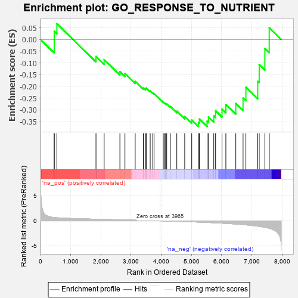
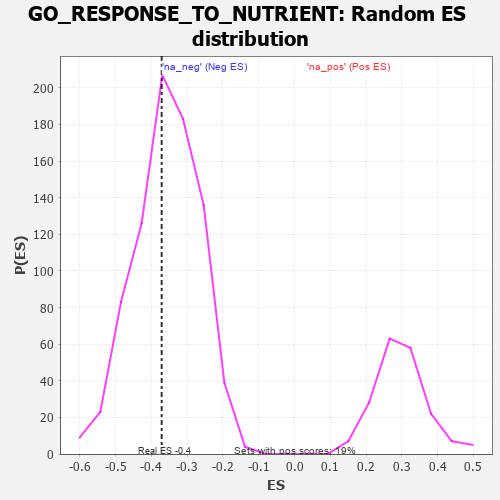

| | | Dataset | 7d |
| Phenotype | NoPhenotypeAvailable |
| Upregulated in class | na_neg |
| GeneSet | GO_RESPONSE_TO_NUTRIENT |
| Enrichment Score (ES) | -0.3711174 |
| Normalized Enrichment Score (NES) | -1.0424736 |
| Nominal p-value | 0.41234568 |
| FDR q-value | 0.81403 |
| FWER p-Value | 1.0 |
Table: GSEA Results Summary

Fig 1: Enrichment plot: GO_RESPONSE_TO_NUTRIENT
Profile of the Running ES Score & Positions of GeneSet Members on the Rank Ordered List
| PROBE | GENE SYMBOL | GENE_TITLE | RANK IN GENE LIST | RANK METRIC SCORE | RUNNING ES | CORE ENRICHMENT | | 1 | ERCC1 | | | 453 | 0.660 | -0.0108 | No |
| 2 | HAT1 | | | 454 | 0.659 | 0.0354 | No |
| 3 | SRF | | | 542 | 0.615 | 0.0676 | No |
| 4 | GATA4 | | | 1837 | 0.330 | -0.0723 | No |
| 5 | BMP7 | | | 2107 | 0.290 | -0.0859 | No |
| 6 | GNPAT | | | 2629 | 0.208 | -0.1369 | No |
| 7 | AQP3 | | | 2796 | 0.184 | -0.1450 | No |
| 8 | OGG1 | | | 3135 | 0.132 | -0.1783 | No |
| 9 | MED1 | | | 3405 | 0.089 | -0.2060 | No |
| 10 | LDHA | | | 3479 | 0.080 | -0.2096 | No |
| 11 | FES | | | 3501 | 0.077 | -0.2068 | No |
| 12 | ACSL4 | | | 3632 | 0.055 | -0.2193 | No |
| 13 | HSF1 | | | 3718 | 0.039 | -0.2273 | No |
| 14 | SRSF2 | | | 3759 | 0.033 | -0.2301 | No |
| 15 | SFRP2 | | | 4065 | -0.018 | -0.2672 | No |
| 16 | MTOR | | | 4114 | -0.025 | -0.2716 | No |
| 17 | HMGCL | | | 4141 | -0.031 | -0.2726 | No |
| 18 | PDX1 | | | 4179 | -0.038 | -0.2746 | No |
| 19 | USF1 | | | 4296 | -0.059 | -0.2851 | No |
| 20 | SNW1 | | | 4514 | -0.096 | -0.3056 | No |
| 21 | PIM1 | | | 4776 | -0.152 | -0.3279 | No |
| 22 | DAD1 | | | 5008 | -0.199 | -0.3430 | No |
| 23 | USF2 | | | 5232 | -0.252 | -0.3534 | Yes |
| 24 | PTEN | | | 5262 | -0.261 | -0.3388 | Yes |
| 25 | VDR | | | 5517 | -0.325 | -0.3480 | Yes |
| 26 | FOLR2 | | | 5563 | -0.336 | -0.3301 | Yes |
| 27 | ENSA | | | 5739 | -0.388 | -0.3249 | Yes |
| 28 | ADA | | | 5798 | -0.405 | -0.3038 | Yes |
| 29 | XBP1 | | | 6011 | -0.475 | -0.2972 | Yes |
| 30 | TNKS | | | 6138 | -0.516 | -0.2769 | Yes |
| 31 | LIPG | | | 6468 | -0.648 | -0.2729 | Yes |
| 32 | EGFR | | | 6708 | -0.765 | -0.2493 | Yes |
| 33 | KYNU | | | 6802 | -0.816 | -0.2039 | Yes |
| 34 | TSPO | | | 7194 | -1.065 | -0.1784 | Yes |
| 35 | ABCA1 | | | 7243 | -1.113 | -0.1064 | Yes |
| 36 | OTC | | | 7430 | -1.305 | -0.0383 | Yes |
| 37 | TTPA | | | 7575 | -1.516 | 0.0499 | Yes |
Table: GSEA details [plain text format]

Fig 2: GO_RESPONSE_TO_NUTRIENT: Random ES distribution
Gene set null distribution of ES for GO_RESPONSE_TO_NUTRIENT